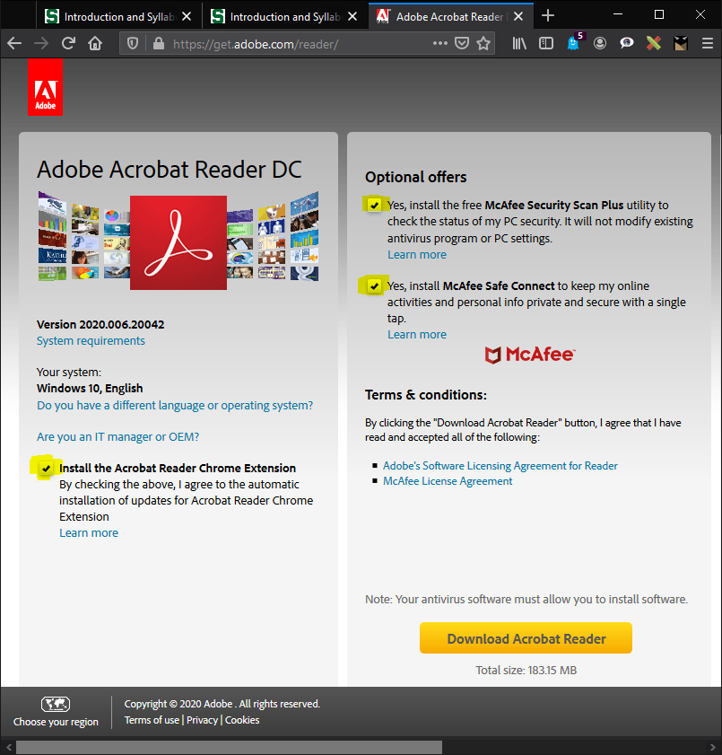

RStudio Projects
The purpose of this class is to introduce students to the principles of programming using the R and RStudio software packages. R and RStudio are powerful and versatile data analysis packages that are freely available. The R community is extensive and is constantly developing new tools that rival and, in many cases, surpass commercial statistical software and graphing packages. This class is designed for students new to programming. While the class focus is on programming in R and RStudio, the programming skills taught are designed so that students can transfer their skills to other programming platforms like C, JavaScript, or ADMB.
Programming Fundamentals Using R is self-paced but students are expected to complete the class within six months. The amount of material in the class is about the same as a three credit, one semester class. There are no regularly scheduled office hours but you can email or call the instructor to ask questions or set up a meeting. Most contacts will receive a response within one business day.
Charlie Belinsky
About me...
I started my career as a Software Engineer for Motorola in Arizona where I developed software for military radios. From there I became a high school teacher in Port Huron, MI where I taught Computer Science, Web Design, and Physical Science. After that, I worked as an Instructional Designer for the College of Education at MSU where my main project was developing the hybrid graduate program. I currently work at the QFC where my primary job is developing online classes, including this one. In my free time you will often find me with a backpack deep in a forest or, as my picture testifies to, hanging out on a mountain in the Northern Cascades.
You can contact me, Charlie, regarding technical issues.
MSU also offers 24 hour technical support for students. This support includes hardware, software, and D2L.
Students should be familiar with basic statistical concepts and tests that one would find in an introductory statistics class (like linear regressions and ANOVAs). All material for this course is online -- no textbooks are required.
Hardware: Any Windows, Mac, or Linux machine from the past ten years that has updates installed can handle all the hardware and software requirements of this class. Preferably the computer has a webcam and microphone for videoconferencing.
Browser: Firefox is recommended. You can use any browser (Edge, Chrome, Safari, Firefox) updated within the last couple years to view, navigate, and complete the whole course but some of the advanced navigation features can only be used in Firefox.
Videoconferencing: We use Zoom for our videoconference meetings. The meeting link will be emailed to you prior to the meeting. It is recommend that you download and test your camera and microphone on Zoom before attending an instructor meeting. The easiest way to to this is to go to the Zoom test page. Note: Zoom's test page will download Zoom for you.
To test your hardware in Zoom, open Zoom and make sure you are on the Home tab and click the Settings Icon (right side- fig ##) and the Settings Window will open (right side- fig ##). Go to the Audio and Video tabs to test your microphone, speakers, and webcam. If you are using a Mac, the view is different but the buttons are the same.

You need an MSU ID or an MSU Guest ID to access the class. You can get an MSU Guest ID here. The Guest ID is the same as the email you used to get it.
The course has 28 lessons divided into three units: Basic Programming, Data Programming, and Statistical Programming
Most lessons have an Application section at the end that will ask you to apply what you learned in the lesson in your own script. The applications are not graded and the answers are provided on the GitHub page for the class. However, it is highly recommended that you email your applications to the instructor. Emailing instructions are given in the applications.
Many of the lessons contain optional content called Extension and Traps. Extensions contain material that goes beyond the lesson's objectives and Traps capture some of the common issues students have with the lesson's objectives. There are links to Extensions and Traps within the Content area of the lesson. Clicking on the appropriate link takes you directly to the Extension or Trap. Extension: testing the extension link.
The only product that will be evaluated is your class project. Your class project is to use the skills taught in this class with your own data. The class project is meant to be an ongoing assignment that you update as you learn the skills taught in the lessons. If you do not have your own data you can find a dataset online -- there are many datasets that are freely available online including hundreds at this website. More information and the rubric for the class project is here.
All material used in the class is available on GitHub, this includes:
Student-instructor meetings will be done on an as-needed basis and meetings can always be requested by the student. Meetings are done preferably using Zoom so that screens can be shared.
This sections goes over some of the technological features built into the lessons
Most pictures in the course can be resized so that the picture is out of your way when you don't need to view it. Clicking on the picture toggles it between the minimized and maximized states (fig ##).
.jpg)
When you click on a figure reference, the caption on the figure will highlight for 2 seconds. If the figure is not on the screen, then the page will scroll to the figure and highlight it. For instance, clicking on fig ## will take you to the Zoom figure near the top of this page.
You can print any lesson or save it as a PDF by clicking on the Printer icon at the top of every lesson (and this syllabus). This will bring up a print dialog (fig ##) and you can print the lesson to a printer. On most machines, you can also choose a PDF device as a printer -- this will save the lesson as a PDF document.
Note: Using your browser's print feature instead on the Print link will print out the whole webpage instead of just the lesson.
If you are using Windows 7 or 8, you might not have a PDF device and you will need to download Print-to-PDF software. You can see if you have a PDF device by going to the print options in any program and see if any of the devices have "PDF" in their name (fig ##). If you don't have a PDF device, then I recommend you install CutePDF (direct link to the file download). CutePDF is simple print-to-PDF software that does not try to install any extra software on your computer. Trap: Bloatware

If you long-click (hold left-button for about half a second) anywhere on any lesson page (fig ##, try it!), you are given options to:
In Firefox, the options above are also included in the right-click menu.

Double-clicking on a codeblock will select all the text in the codeblock and copy it to the clipboard -- you can then paste it into RStudio (or any other text editor).
The biggest thing that is lost when you move a class from a face-to-face environment to an online environment is the daily interaction between the instructor and the students. These interactions provide invaluable informal feedback for the instructor and, I would argue, are the main tool that an instructor uses to make improvements to their class. It is impossible to replicate this in an online class but I ask that you help me out and make an effort to communicate to me the little things. This could mean technical nags like content not appearing properly or pages loading too slowly, lesson content that is unclear, grammar and spelling issues, or scripts that does not work or work in a way that you do not understand.
Thank you for reading and taking this into consideration. In the end, it is the interactions between an instructor and the students that make a class great.
Now on to the stuff I have to put in a syllabus...
Written or other work which a student submits in a course, shall be the product of his/her own efforts. Plagiarism, cheating, and all other forms of academic dishonesty are prohibited. Students are expected to adhere to the ethical and professional standards associated with their programs and academic courses. All applicable portions of Michigan State’s Policy on Academic Integrity apply to non-credit courses. Copies of the Policy on Academic Integrity may be accessed at https://www.msu.edu/unit/ombud/honestylinks.html.
You are expected to log in to the class at least once a week. Logging in allows you to stay updated and see new announcements.
Please note that not all course lessons are the same length and the later ones tend to involve more work. Our goals with regard to participation/progress are to (a) keep you engaged in the course, (b) enhance the overall learning environment by promoting student-teacher communication, and (c) avoid a last minute time crunch for everyone involved. We will not be sympathetic or make allowances for your failure on course tasks or deadlines that result from not seeing announcements because you had not accessed the course for an extended period, and had not told us you would be away from the internet.
Adobe Acrobat, like most free software you download, attempts to bundle itself with software you most likely do not need nor want (i.e., bloatware). Make sure you take some time to read the optional offers whenever you download software. This author would argue that the main reason computers "slow" down over time is because of extra software that users unwittingly install.

Hi, and welcome to the test Extension. If you clicked on the Extension link to get here then you can return to your previous location by long-clicking on this page and choosing Go to Previous Location.
If you just scrolled down to this point then, congratulations, you have reached the end of the document.